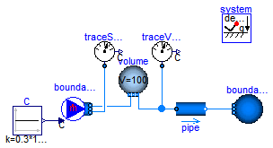
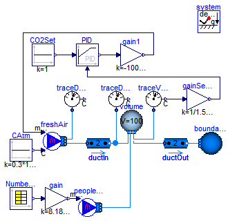

| Name | Description |
|---|---|
| Demonstrates a room volume with CO2 accumulation | |
| Demonstrates a room volume with CO2 controls |
 Modelica.Fluid.Examples.TraceSubstances.RoomCO2
Modelica.Fluid.Examples.TraceSubstances.RoomCO2
This example consists of a volume with a carbon dioxide concentration that corresponds to 1.519E-3 kg/kg, which is equal to 1000 PPM. There is a fresh air stream with a carbon dioxide concentration of about 300 PPM. The fresh air stream is such that the air exchange rate is about 5 air changes per hour. After 1 hour of ventilation, the volume's carbon dioxide concentration is close to the concentration of the fresh air.
The nominal value for the trace substance is set to C_nominal={1.519E-3}.
This scales the residual equations that are used by the solver to the right order
of magnitude.
Extends from Modelica.Icons.Example (Icon for runnable examples).
model RoomCO2 "Demonstrates a room volume with CO2 accumulation"
extends Modelica.Icons.Example;
package Medium=Modelica.Media.Air.MoistAir(extraPropertiesNames={"CO2"},
C_nominal={1.519E-3});
Modelica.Blocks.Sources.Constant C(k=0.3*1.519E-3)
"substance concentration, raising to 1000 PPM CO2";
Sources.FixedBoundary boundary4(nPorts=1,redeclare package Medium = Medium);
Sensors.TraceSubstances traceVolume(redeclare package Medium = Medium);
inner System system;
Sources.MassFlowSource_T boundary1(
use_C_in=true,
m_flow=100/1.2/3600*5,
redeclare package Medium = Medium,
nPorts=2,
X=Medium.X_default);
Modelica.Fluid.Vessels.ClosedVolume volume(
C_start={1.519E-3},
V=100,
redeclare package Medium = Medium,
nPorts=2,
X_start={0.015,0.085},
massDynamics=Modelica.Fluid.Types.Dynamics.FixedInitial,
use_portsData=false);
Modelica.Fluid.Pipes.StaticPipe pipe(
redeclare package Medium = Medium,
length=1,
diameter=0.15,
redeclare model FlowModel =
Modelica.Fluid.Pipes.BaseClasses.FlowModels.DetailedPipeFlow (
show_Res=true));
Sensors.TraceSubstances traceSource(redeclare package Medium = Medium);
equation
connect(C.y, boundary1.C_in[1]);
connect(pipe.port_b, boundary4.ports[1]);
connect(volume.ports[2], pipe.port_a);
connect(traceVolume.port, pipe.port_a);
connect(boundary1.ports[1], volume.ports[1]);
connect(boundary1.ports[2], traceSource.port);
end RoomCO2;
Modelica.Fluid.Examples.TraceSubstances.RoomCO2WithControls
This example illustrates a room volume with a CO2 source and a fresh air supply with feedback
control.
The CO2 emission rate is proportional to the room occupancy, which is defined by a schedule.
The fresh air flow rate is controlled such that the room CO2
concentration does not exceed 1000 PPM (=1.519E-3 kg/kg).
The fresh air has a CO2 concentration of 300 PPM which corresponds to a typical
CO2 concentration in the outside air.
The CO2 emission from the occupants is implemented as a mass flow source.
Depending on the activity and size, a person emits about 8.18E-6 kg/s CO2. In the model,
this value is multiplied by the number of occupants.
Since the mass flow rate associate with the CO2 source model contributes to the volume's energy balance,
this mass flow rate should be kept small. Thus, in the source model, we set the
CO2 concentration to C={100} kg/kg, and scaled the mass flow rate using
m_flow = 1/100 * nPeo * 8.18E-6 kg/(s*person)
where nPeo is the number of people in the room.
This results in a mass flow rate that is about 5 orders of magnitudes smaller than the supply air flow rate,
and hence its contribution to the volume's energy balance is negligible.
The nominal value for the trace substance is set to C_nominal={1.519E-3}.
This scales the residual equations that are used by the solver to the right order
of magnitude.
Extends from Modelica.Icons.Example (Icon for runnable examples).
model RoomCO2WithControls
"Demonstrates a room volume with CO2 controls"
extends Modelica.Icons.Example;
package Medium=Modelica.Media.Air.MoistAir(extraPropertiesNames={"CO2"},
C_nominal={1.519E-3});
Modelica.Blocks.Sources.Constant CAtm(k=0.3*1.519E-3)
"Atmospheric trace substance concentration, corresponding to 300 PPM CO2";
Sources.FixedBoundary boundary4(nPorts=1,redeclare package Medium = Medium);
Sensors.TraceSubstances traceVolume(redeclare package Medium = Medium);
inner System system;
Sources.MassFlowSource_T freshAir(
use_C_in=true,
redeclare package Medium = Medium,
use_m_flow_in=true,
nPorts=2);
Modelica.Fluid.Vessels.ClosedVolume volume(
C_start={1.519E-3},
V=100,
redeclare package Medium = Medium,
massDynamics=Modelica.Fluid.Types.Dynamics.FixedInitial,
use_portsData=false,
nPorts=4);
Pipes.DynamicPipe ductOut(
redeclare package Medium = Medium,
length=1,
diameter=0.15,
redeclare model FlowModel =
Modelica.Fluid.Pipes.BaseClasses.FlowModels.DetailedPipeFlow (
show_Res=true)) "Outlet duct";
Sensors.TraceSubstances traceDuctIn(redeclare package Medium = Medium)
"Trace substance at duct inlet";
Sources.MassFlowSource_T peopleSource(
m_flow=100/1.2/3600*5,
redeclare package Medium = Medium,
use_m_flow_in=true,
use_C_in=false,
C={100},
nPorts=1) "CO2 emitted by room occupants.";
Modelica.Blocks.Sources.CombiTimeTable NumberOfPeople(table=[0,0; 9*3600,0;
9*3600,10; 11*3600,10; 11*3600,2; 13*3600,2; 13*3600,15; 15*3600,15;
15*3600,5; 18*3600,5; 18*3600,0; 24*3600,0])
"Time table for number of people in the room";
Modelica.Blocks.Math.Gain gain(k=8.18E-6/100)
"CO2 mass flow rate, released per 100 person (there is another 100 factor in peopleSource)";
Modelica.Blocks.Math.Gain gain1(k=-100*1.2/3600*5)
"Nominal fresh air flow rate (for u=1)";
Modelica.Blocks.Math.Gain gainSensor(k=1/1.519E-3)
"Gain to normalize CO2 measurement signal. y=1 corresponds to 1000 PPM";
Modelica.Blocks.Sources.Constant CO2Set(k=1) "Normalized CO2 set point";
Modelica.Blocks.Continuous.LimPID PID(
controllerType=Modelica.Blocks.Types.SimpleController.PI,
yMax=0,
yMin=-1,
Ti=10,
k=10);
Pipes.DynamicPipe ductIn(
redeclare package Medium = Medium,
length=1,
diameter=0.15,
redeclare model FlowModel =
Modelica.Fluid.Pipes.BaseClasses.FlowModels.DetailedPipeFlow (
show_Res=true)) "Inlet duct";
Sensors.TraceSubstances traceDuctOut(redeclare package Medium = Medium)
"Trace substance at duct outlet";
equation
connect(CAtm.y, freshAir.C_in[1]);
connect(ductOut.port_b, boundary4.ports[1]);
connect(NumberOfPeople.y[1], gain.u);
connect(gain.y, peopleSource.m_flow_in);
connect(traceVolume.C, gainSensor.u);
connect(CO2Set.y, PID.u_s);
connect(gainSensor.y, PID.u_m);
connect(PID.y, gain1.u);
connect(gain1.y, freshAir.m_flow_in);
connect(ductIn.port_b, volume.ports[1]);
connect(peopleSource.ports[1], volume.ports[2]);
connect(volume.ports[3], ductOut.port_a);
connect(volume.ports[4], traceVolume.port);
connect(freshAir.ports[1], traceDuctIn.port);
connect(ductIn.port_a, freshAir.ports[2]);
connect(traceDuctOut.port, ductIn.port_b);
end RoomCO2WithControls;